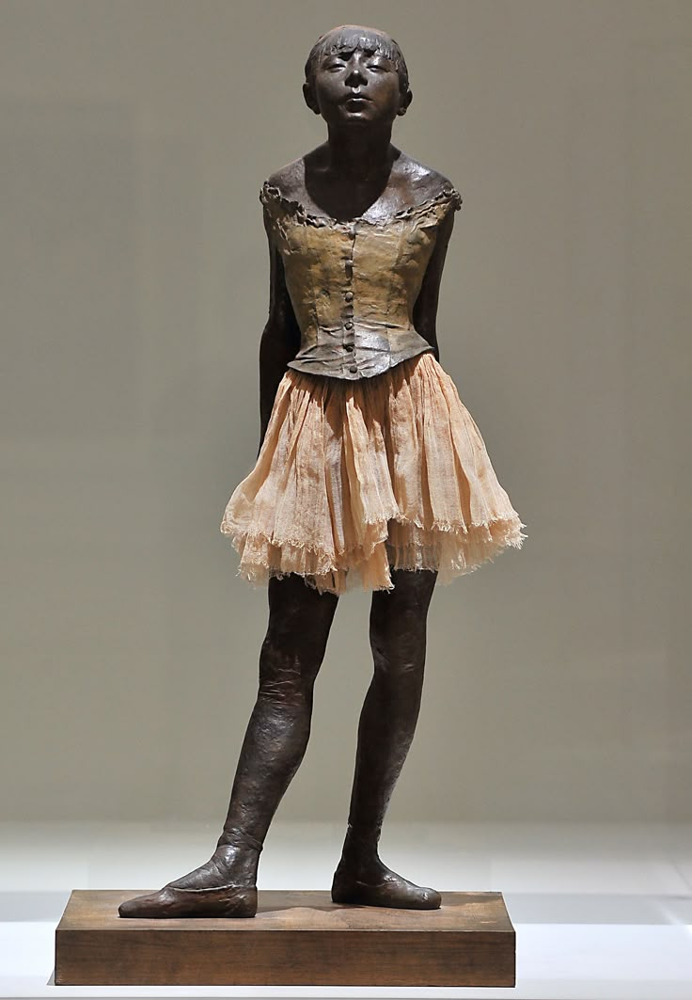
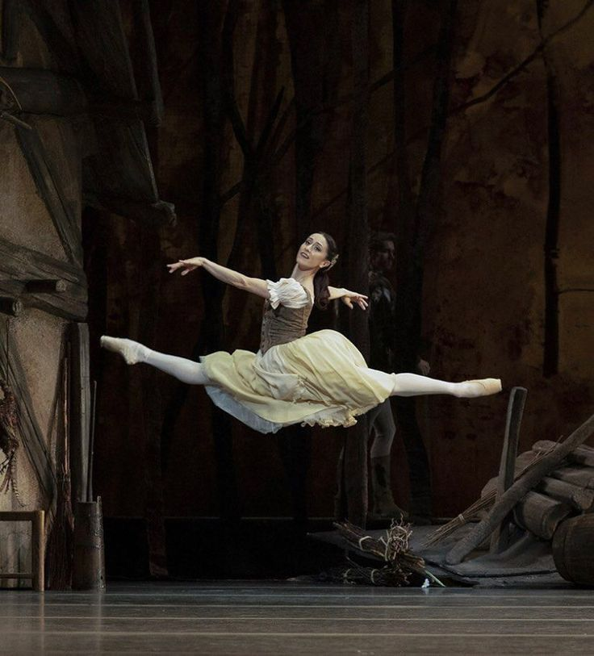
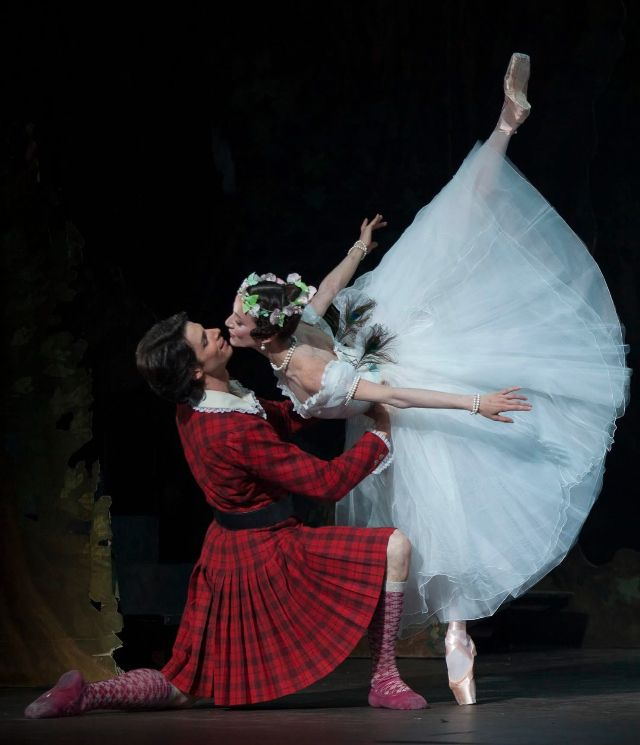

El origen del ballet se remonta a Italia en el renacimiento, entre el 1400 - 1600, durante el reinado de Louis XIV. Durante este tiempo surgió la necesidad de profesionalizar este tipo de danza y fue en el 1661 cuando se originó la primera escuela de danza, la academia Royale de la Danse. Ya fue a finales del siglo XVII, en Francia cuando se fundó la academia "Royale de Musique", en la ópera de París. Esta fue la primera compañía profesional y empezó a ofrecer representaciones más continuas, ganando un gran renombre.

Las bailarinas de la ópera de París eran conocidas como petit rat ya que eran jóvenes pobres que se convertían en bailarinas para ganar dinero entreteniendo y satisfaciendo a los hombres que iban a verlas conocidos como padrinos. Años después, el ballet se volvió algo con lo que podían demostrar estatus. Empezó en Italia, se popularizó en Paris y se perfeccionó en Rusia.

El ballet "Giselle" fue creado por un equipo de artistas, incluyendo el compositor Adolphe Adam, los coreógrafos Jean Coralli y Jules Perrot, y los libretistas Théophile Gautier y Jules-Henri Vernoy de Saint-Georges.
El ballet Giselle es uno de los más conocidos y apreciados del repertorio clásico mundial. Con música del compositor Adolphe Adam y coreografía de Jean Coralli y Jules Perrot, esta obra se estrenó en París en 1841 y desde entonces ha sido representada en todo el mundo. En ésta historia, en un pueblo de Renania, Giselle, una joven campesina apasionada por la danza, se enamora de Loys, quien en realidad es el duque Albrecht disfrazado. Aunque él le jura amor, Hilarión, un leñador celoso, sospecha y descubre su verdadera identidad. Durante una celebración, Hilarión revela que Loys está comprometido con otra mujer. Giselle, destrozada, enloquece y muere.

En el segundo acto, Giselle se convierte en una Wili, espíritu de una joven fallecida antes de casarse. Las Wilis, lideradas por Myrtha, condenan a bailar hasta la muerte a los hombres que encuentran. Hilarión es su primera víctima. Cuando Albrecht llega a la tumba de Giselle, ella lo protege, pero también debe bailar para las Wilis. A punto de morir, Albrecht es salvado por el amanecer que ahuyenta a las Wilis. Giselle lo perdona, y él queda solo, llorando ante su tumba.
.jpeg)
 Instagram.jpeg)
La obra de Giselle es considerada trágica debido a la muerte de la protagonista tras descubrir la traición de su amado y la revelación de su verdadera identidad. La historia, basada en una leyenda, explora temas como el amor, la decepción, la locura y la muerte, elementos que la hacen una obra de profunda tristeza. En detalle, es considerada trágica por: El engaño y la traición, la muerte como punto culminante, el simbolismo y la fantasía, el mensaje de amor y perdón y la naturaleza humana

Giselle es un ballet romántico, así que es considerada una de las obras maestras del romanticismo. El romanticismo influyó significativamente en la obra Giselle, ya que se estrenó en 1841, durante el apogeo del movimiento romántico en Europa. En la narrativa, la música, la coreografía y la estética del ballet se nota toda la influencia que tuvo este movimiento en esta obra.
El ballet "Giselle" explora temas como el amor, la traición, la locura y la libertad. El creador utilizó la historia de Giselle para reflexionar sobre el poder de la danza y la pasión, así como para denunciar la opresión y reivindicar el sueño de libertad.
La música de Giselle, compuesta por Adolphe Adam, es esencial para la narrativa y coreografía de la obra, creando una experiencia que va más allá de la simple representación de la historia. La música no solo acompaña la danza, sino que también la define, dando forma a la atmósfera, los personajes y los momentos clave de la trama.
Giselle es una obra que influye significativamente en las vidas de los bailarines y del público de varias maneras. En los bailarines influye por su desarrollo técnico, la expresión emocional y el crecimiento artístico. Y en la influencia en el público influye por la conexión emocional, la apreciación al arte y la experiencia cultural.
El legado de Giselle la ha llevado a ser un icono cultural dentro de los bailarines, es de gran importancia en la historia del ballet y ha inspirado a la creación para otras obras como el ballet romántico La Sylphide, la película Los zapatos rojos y Black swan, que es la adaptación de Giselle al cine.

.jpeg)
En conclusión, Giselle es mucho más que una pieza destacada en el repertorio del ballet clásico; representa el punto culminante de la estética del romanticismo en la danza. A través de la combinación perfecta entre la composición musical de Adolphe Adam, una técnica virtuosa y una narrativa conmovedora, la obra trasciende el mero entretenimiento para reflexionar sobre dilemas humanos universales como el amor, la traición, la locura y el perdón. Su evolución histórica desde las raíces del ballet en las cortes italianas y francesas hasta su consolidación en Rusia demuestra cómo la danza académica se transformó en una forma superior de expresión artística. Por su profundidad temática y su rigor técnico, Giselle se mantiene como un referente indiscutible del arte trágico y una fuente inagotable de inspiración cultural en la actualidad.